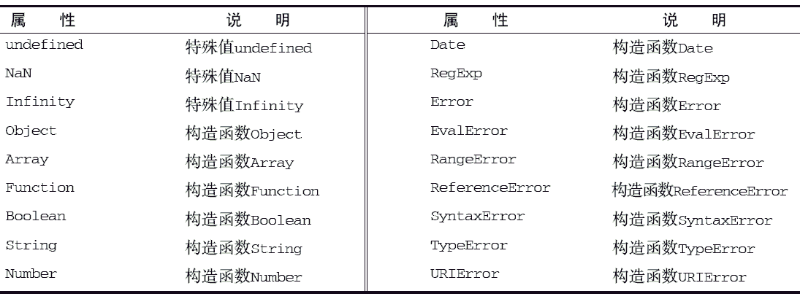
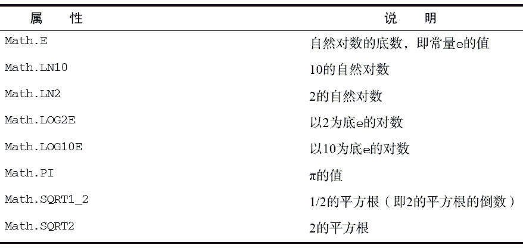
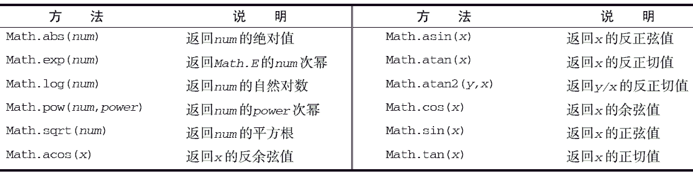

ECMA-262 还定义了两个单体内置对象：Global 和Math。
Global（全局）对象可以说是ECMAScript 中最特别的一个对象了，因为不管你从什么角度上看，这个对象都是不存在的。ECMAScript 中的Global 对象在某种意义上是作为一个终极的“兜底儿对象”来定义的。换句话说，不属于任何其他对象的属性和方法，最终都是它的属性和方法。事实上，没有全局变量或全局函数；所有在全局作用域中定义的属性和函数，都是Global 对象的属性。本书前面介绍过的那些函数，诸如isNaN()、isFinite()、parseInt()以及parseFloat()，实际上全都是Global对象的方法。除此之外，Global 对象还包含其他一些方法。
其中，encodeURI()主要用于整个URI（例如，http://www.wrox.com/illegal value.htm），而encode-URIComponent()主要用于对URI 中的某一段（例如前面URI 中的illegal value.htm）进行编码。
它们的主要区别在于，encodeURI()不会对本身属于URI 的特殊字符进行编码，例如冒号、正斜杠、问号和井字号；而encodeURIComponent()则会对它发现的任何非标准字符进行编码。来看下面的例子。
var uri = "http://www.wrox.com/illegal value.htm#start"; //"http://www.wrox.com/illegal%20value.htm#start" alert(encodeURI(uri)); //"http%3A%2F%2Fwww.wrox.com%2Fillegal%20value.htm%23start" alert(encodeURIComponent(uri));运行一下
一般来说， 我们使用encodeURIComponent() 方法的时候要比使用encodeURI()更多，因为在实践中更常见的是对查询字符串参数而不是对基础URI进行编码。
与encodeURI()和encodeURIComponent()方法对应的两个方法分别是decodeURI()和decodeURIComponent()。其中，decodeURI()只能对使用encodeURI()替换的字符进行解码。例如，它可将%20 替换成一个空格，但不会对%23 作任何处理，因为%23 表示井字号（#），而井字号不是使用encodeURI()替换的。同样地，decodeURIComponent()能够解码使用encodeURIComponent()编码的所有字符，即它可以解码任何特殊字符的编码。来看下面的例子：
var uri = "http%3A%2F%2Fwww.wrox.com%2Fillegal%20value.htm%23start"; //http%3A%2F%2Fwww.wrox.com%2Fillegal value.htm%23start alert(decodeURI(uri)); //http://www.wrox.com/illegal value.htm#start alert(decodeURIComponent(uri));运行一下
这里，变量uri 包含着一个由encodeURIComponent()编码的字符串。在第一次调用decodeURI()输出的结果中，只有%20 被替换成了空格。而在第二次调用decodeURIComponent()输出的结果中，所有特殊字符的编码都被替换成了原来的字符，得到了一个未经转义的字符串（但这个字符串并不是一个有效的URI）。
URI 方法encodeURI()、encodeURIComponent()、decodeURI()和decode-URIComponent()用于替代已经被ECMA-262 第3 版废弃的escape()和unescape()方法。URI 方法能够编码所有Unicode 字符，而原来的方法只能正确地编码ASCII 字符。
因此在开发实践中，特别是在产品级的代码中，一定要使用URI 方法，不要使用escape()和unescape()方法。
现在，我们介绍最后一个——大概也是整个ECMAScript 语言中最强大的一个方法：eval()。eval()方法就像是一个完整的ECMAScript 解析器，它只接受一个参数，即要执行的ECMAScript （或JavaScript）字符串。看下面的例子：
eval("alert('hi')");
这行代码的作用等价于下面这行代码：alert("hi");
当解析器发现代码中调用eval()方法时，它会将传入的参数当作实际的ECMAScript 语句来解析，然后把执行结果插入到原位置。通过eval()执行的代码被认为是包含该次调用的执行环境的一部分，因此被执行的代码具有与该执行环境相同的作用域链。这意味着通过eval()执行的代码可以引用在包含环境中定义的变量，举个例子：
var msg = "hello world";
eval("alert(msg)"); //"hello world"
可见，变量msg 是在eval()调用的环境之外定义的，但其中调用的alert()仍然能够显示"helloworld"。这是因为上面第二行代码最终被替换成了一行真正的代码。同样地，我们也可以在eval()调用中定义一个函数，然后再在该调用的外部代码中引用这个函数：
eval("function sayHi() { alert('hi'); }");
sayHi();
显然，函数sayHi()是在eval()内部定义的。但由于对eval()的调用最终会被替换成定义函数的实际代码，因此可以在下一行调用sayHi()。对于变量也一样：
eval("var msg = 'hello world'; ");
alert(msg); //"hello world"
在eval()中创建的任何变量或函数都不会被提升，因为在解析代码的时候，它们被包含在一个字符串中；它们只在eval()执行的时候创建。
严格模式下，在外部访问不到eval()中创建的任何变量或函数，因此前面两个例子都会导致错误。
同样，在严格模式下，为eval 赋值也会导致错误："use strict"; eval = "hi"; //causes error
能够解释代码字符串的能力非常强大，但也非常危险。因此在使用eval()时必须极为谨慎，特别是在用它执行用户输入数据的情况下。否则，可能会有恶意用户输入威胁你的站点或应用程序安全的代码（即所谓的代码注入）。
Global 对象还包含一些属性，其中一部分属性已经在本书前面介绍过了。例如，特殊的值undefined、NaN 以及Infinity 都是Global 对象的属性。此外，所有原生引用类型的构造函数，像Object 和Function，也都是Global 对象的属性。下表列出了Global 对象的所有属性。
ECMAScript 虽然没有指出如何直接访问Global 对象，但Web 浏览器都是将这个全局对象作为window 对象的一部分加以实现的。因此，在全局作用域中声明的所有变量和函数，就都成为了window对象的属性。来看下面的例子。
var color = "red";
function sayColor(){
alert(window.color);
}
window.sayColor(); //"red"
运行一下这里定义了一个名为color 的全局变量和一个名为sayColor()的全局函数。在sayColor()内部，我们通过window.color 来访问color 变量，以说明全局变量是window 对象的属性。然后，又使用window.sayColor()来直接通过window 对象调用这个函数，结果显示在了警告框中。
JavaScript中的window 对象除了扮演ECMAScript规定的Global 对象的角色外，还承担了很多别的任务。第8 章在讨论浏览器对象模型时将详细介绍window 对象。
另一种取得Global 对象的方法是使用以下代码：
var global = function(){
return this;
}()；
以上代码创建了一个立即调用的函数表达式，返回this 的值。如前所述，在没有给函数明确指定this 值的情况下（无论是通过将函数添加为对象的方法，还是通过调用call()或apply()），this值等于Global 对象。而像这样通过简单地返回this 来取得Global 对象，在任何执行环境下都是可行的。第7 章将深入讨论函数表达式。
ECMAScript 还为保存数学公式和信息提供了一个公共位置，即Math 对象。与我们在JavaScript 直接编写的计算功能相比，Math 对象提供的计算功能执行起来要快得多。Math 对象中还提供了辅助完成这些计算的属性和方法。
Math 对象包含的属性大都是数学计算中可能会用到的一些特殊值。下表列出了这些属性。
其中，min()和max()方法用于确定一组数值中的最小值和最大值。这两个方法都可以接收任意多个数值参数，如下面的例子所示。
var max = Math.max(3, 54, 32, 16); alert(max); //54 var min = Math.min(3, 54, 32, 16); alert(min); //3运行一下
对于3、54、32 和16，Math.max()返回54，而Math.min()返回3。这两个方法经常用于避免多余的循环和在if 语句中确定一组数的最大值。要找到数组中的最大或最小值，可以像下面这样使用apply()方法。
var values = [1, 2, 3, 4, 5, 6, 7, 8]; var max = Math.max.apply(Math, values);
这个技巧的关键是把Math 对象作为apply()的第一个参数，从而正确地设置this 值。然后，可以将任何数组作为第二个参数。
alert(Math.ceil(25.9)); //26 alert(Math.ceil(25.5)); //26 alert(Math.ceil(25.1)); //26 alert(Math.round(25.9)); //26 alert(Math.round(25.5)); //26 alert(Math.round(25.1)); //25 alert(Math.floor(25.9)); //25 alert(Math.floor(25.5)); //25 alert(Math.floor(25.1)); //25运行一下
对于所有介于25 和26（不包括26）之间的数值，Math.ceil()始终返回26，因为它执行的是向上舍入。Math.round()方法只在数值大于等于25.5 时返回26；否则返回25。最后，Math.floor()对所有介于25 和26（不包括26）之间的数值都返回25。
Math.random()方法返回大于等于0 小于1 的一个随机数。对于某些站点来说，这个方法非常实用，因为可以利用它来随机显示一些名人名言和新闻事件。套用下面的公式，就可以利用Math.random()从某个整数范围内随机选择一个值。
值 = Math.floor(Math.random() * 可能值的总数 + 第一个可能的值)公式中用到了Math.floor()方法，这是因为Math.random()总返回一个小数值。而用这个小数值乘以一个整数，然后再加上一个整数，最终结果仍然还是一个小数。举例来说，如果你想选择一个1到10 之间的数值，可以像下面这样编写代码：
var num = Math.floor(Math.random() * 10 + 1);运行一下
总共有10 个可能的值（1 到10），而第一个可能的值是1。而如果想要选择一个介于2 到10 之间的值，就应该将上面的代码改成这样：
var num = Math.floor(Math.random() * 9 + 2);运行一下
从2 数到10 要数9 个数，因此可能值的总数就是9，而第一个可能的值就是2。多数情况下，其实都可以通过一个函数来计算可能值的总数和第一个可能的值，例如：
function selectFrom(lowerValue, upperValue) {
var choices = upperValue - lowerValue + 1;
return Math.floor(Math.random() * choices + lowerValue);
}
var num = selectFrom(2, 10);
aler t(num); // 介于 2 和10 之间（包括 2 和 10）的一个数值
运行一下函数selectFrom()接受两个参数：应该返回的最小值和最大值。而用最大值减最小值再加1 得到了可能值的总数，然后它又把这些数值套用到了前面的公式中。这样，通过调用selectFrom(2,10)就可以得到一个介于2 和10 之间（包括2 和10）的数值了。利用这个函数，可以方便地从数组中随机取出一项，例如：
var colors = ["red", "green", "blue", "yellow", "black", "purple", "brown"]; var color = colors[selectFrom(0, colors.length-1)]; aler t(color); // 可能是数组中包含的任何一个字符串运行一下
在这个例子中，传递给selectFrom()的第二个参数是数组的长度减1，也就是数组中最后一项的位置。
Math 对象中还包含其他一些与完成各种简单或复杂计算有关的方法，但详细讨论其中每一个方法的细节及适用情形超出了本书的范围。下面我们就给出一个表格，其中列出了这些没有介绍到的Math对象的方法。
虽然ECMA-262 规定了这些方法，但不同实现可能会对这些方法采用不同的算法。毕竟，计算某个值的正弦、余弦和正切的方式多种多样。也正因为如此，这些方法在不同的实现中可能会有不同的精度。